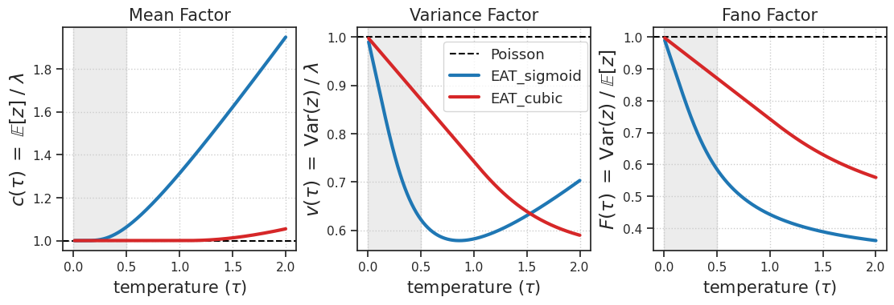
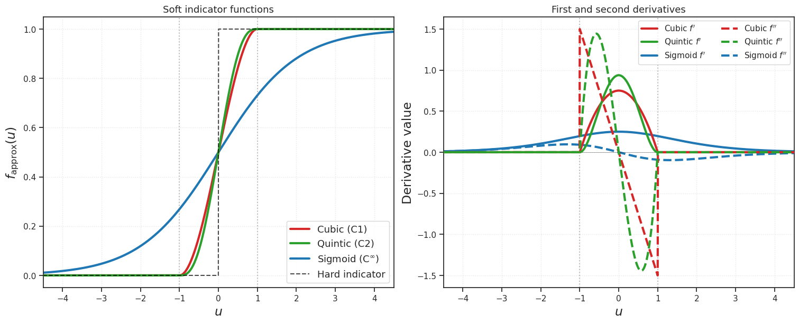

(26) EAT method – bias of moments plot (theory)#
Project: _PoissonGradEstim
device_idx = 0
device = f'cuda:{device_idx}'
# dtype = torch.bfloat16 # half the size of float32
dtype = torch.float32
print(f"device: {device}, dtype: {dtype} ——— host: {os.uname().nodename}")
device: cuda:0, dtype: torch.float32 ——— host: mach
Make fig dir#
fig_dir = fig_base_dir / f'{project_name}_figs-(2026_01_28)'
fig_dir.mkdir(exist_ok=True)
os.listdir(str(fig_dir))
['dist_consistency_wasser.pdf',
'soft_indicators.pdf',
'phi.pdf',
'dist_wasser_lam-[2,20,100].pdf',
'grad_analysis_all_rates.pdf',
'dist_consistency_bias.pdf',
'dist_moments_lam-[2,20,100].pdf',
'dist_moments_theory.pdf',
'grad_analysis_lam-20.pdf',
'dist_consistency_ratio.pdf',
'grad_analysis_raw_lam-20.pdf']
Theorey fun#
# Helper functions
def sigmoid(x):
return 1 / (1 + np.exp(-x))
def softplus(x):
return np.log(1 + np.exp(x))
# Sigmoid quantities
def c_sigmoid(tau):
return tau * softplus(1/tau)
def v_sigmoid(tau):
return tau * (softplus(1/tau) - sigmoid(1/tau))
def F_sigmoid(tau):
return v_sigmoid(tau) / c_sigmoid(tau)
# Cubic quantities
def c_cubic(tau):
result = np.ones_like(tau)
mask = tau > 1
beta = (1 + tau[mask]) / (2 * tau[mask])
result[mask] = tau[mask] * beta**3 * (2 - beta)
return result
def v_cubic(tau):
result = 1 - 9*tau/35
mask = tau > 1
beta = (1 + tau[mask]) / (2 * tau[mask])
result[mask] = tau[mask] * (18*beta**5/5 - 4*beta**6 + 8*beta**7/7)
return result
def F_cubic(tau):
return v_cubic(tau) / c_cubic(tau)
Fig fun#
# Set up tau range
tau = np.linspace(0.01, 2.0, 1000)
# Create figure with 3 subplots
fig, axes = create_figure(1, 3, figsize=(11, 3.7))
for ax in axes.flat:
ax.axvspan(0, 0.5, alpha=0.15, color='gray', zorder=0)
# Plot c(tau) - Mean factor
ax1 = axes[0]
ax1.axhline(y=1, color='k', linestyle='--', alpha=1.0, label='Poisson')
ax1.plot(tau, c_sigmoid(tau), 'C0', linewidth=3, label='EAT_sigmoid')
ax1.plot(tau, c_cubic(tau), 'C3', linewidth=3, label='EAT_cubic')
ax1.set_xlabel("temperature " + r"$(\tau)$", fontsize=15)
ax1.set_ylabel(r'$c(\tau) \;=\; \mathbb{E}[z] \;/\; \lambda$', fontsize=17)
ax1.set_title('Mean Factor', fontsize=15)
# ax1.legend(loc='upper left')
# ax1.grid(True, alpha=0.3)
# ax1.set_xlim(0, 1.5)
# ax1.set_ylim(0.9, 1.6)
# Plot v(tau) - Variance factor
ax2 = axes[1]
ax2.axhline(y=1, color='k', linestyle='--', alpha=1.0, label='Poisson')
ax2.plot(tau, v_sigmoid(tau), 'C0', linewidth=3, label='EAT_sigmoid')
ax2.plot(tau, v_cubic(tau), 'C3', linewidth=3, label='EAT_cubic')
ax2.set_xlabel("temperature " + r"$(\tau)$", fontsize=15)
ax2.set_ylabel(r'$v(\tau) \;=\; \mathrm{Var}(z) \;/\; \lambda$', fontsize=17)
ax2.set_title('Variance Factor', fontsize=15)
ax2.legend(loc='best', fontsize=13)
# ax2.grid(True, alpha=0.3)
# ax2.set_xlim(0, 1.5)
# ax2.set_ylim(0.4, 1.05)
# Plot F(tau) - Fano factor
ax3 = axes[2]
ax3.axhline(y=1, color='k', linestyle='--', alpha=1.0, label='Poisson')
ax3.plot(tau, F_sigmoid(tau), 'C0', linewidth=3, label='EAT_sigmoid')
ax3.plot(tau, F_cubic(tau), 'C3', linewidth=3, label='EAT_cubic')
# ax3.axhspan(0.5, 1.0, alpha=0.1, color='green', label='Cortical range')
ax3.set_xlabel("temperature " + r"$(\tau)$", fontsize=15)
ax3.set_ylabel(r'$F(\tau) \;=\; \mathrm{Var}(z) \;/\; \mathbb{E}[z]$', fontsize=17)
ax3.set_title('Fano Factor', fontsize=15)
# ax3.legend(loc='upper right')
# ax3.grid(True, alpha=0.3)
# ax3.set_xlim(0, 1.5)
# ax3.set_ylim(0.3, 1.05)
move_legend(ax2, (0.34, 0.59))
add_grid(axes)
plt.show()

# fig.savefig(fig_dir / f'dist_moments_theory.pdf', bbox_inches='tight')
cuibic vs sigmoid#
def plot_soft_indicators(save_path=None):
"""
Visualize sigmoid, cubic, and quintic smoothstep soft indicator functions,
along with their first and second derivatives.
"""
u = np.linspace(-6, 6, 2000)
# Sigmoid
sigmoid = 1 / (1 + np.exp(-u))
# Sigmoid derivatives
sigmoid_d1 = sigmoid * (1 - sigmoid)
sigmoid_d2 = sigmoid_d1 * (1 - 2 * sigmoid)
# Cubic smoothstep: f(w) = 3w^2 - 2w^3, where w = (u+1)/2
def cubic_smoothstep(u):
w = np.clip(0.5 * u + 0.5, 0, 1)
return 3 * w**2 - 2 * w**3
def cubic_smoothstep_d1(u):
# df/du = df/dw * dw/du = (6w - 6w^2) * 0.5 = 3w(1-w) * 0.5
# Simplifies to: 3(1 - u^2)/4 on [-1, 1]
result = np.zeros_like(u)
mask = (u >= -1) & (u <= 1)
result[mask] = 3 * (1 - u[mask]**2) / 4
return result
def cubic_smoothstep_d2(u):
# d²f/du² = -3u/2 on [-1, 1]
result = np.zeros_like(u)
mask = (u >= -1) & (u <= 1)
result[mask] = -3 * u[mask] / 2
return result
# Quintic smoothstep: f(w) = 6w^5 - 15w^4 + 10w^3, where w = (u+1)/2
def quintic_smoothstep(u):
w = np.clip(0.5 * u + 0.5, 0, 1)
return 6 * w**5 - 15 * w**4 + 10 * w**3
def quintic_smoothstep_d1(u):
# df/dw = 30w^4 - 60w^3 + 30w^2 = 30w^2(w-1)^2
# df/du = df/dw * 0.5 = 15w^2(w-1)^2
result = np.zeros_like(u)
mask = (u >= -1) & (u <= 1)
w = 0.5 * u[mask] + 0.5
result[mask] = 15 * w**2 * (w - 1)**2
return result
def quintic_smoothstep_d2(u):
# d²f/dw² = 120w^3 - 180w^2 + 60w = 60w(2w-1)(w-1)
# d²f/du² = d²f/dw² * 0.25 = 15w(2w-1)(w-1)
result = np.zeros_like(u)
mask = (u >= -1) & (u <= 1)
w = 0.5 * u[mask] + 0.5
result[mask] = 15 * w * (2*w - 1) * (w - 1)
return result
cubic = cubic_smoothstep(u)
cubic_d1 = cubic_smoothstep_d1(u)
cubic_d2 = cubic_smoothstep_d2(u)
quintic = quintic_smoothstep(u)
quintic_d1 = quintic_smoothstep_d1(u)
quintic_d2 = quintic_smoothstep_d2(u)
# Hard indicator for reference
hard = (u > 0).astype(float)
fig, axes = create_figure(1, 2, figsize=(15, 6.0))
# --- First subplot: original plot ---
ax = axes[0]
ax.plot(u, cubic, 'C3', linewidth=3, label='Cubic (C1)', zorder=3)
ax.plot(u, quintic, 'C2', linewidth=3, label='Quintic (C2)', zorder=3)
ax.plot(u, sigmoid, 'C0', linewidth=3, label=r'Sigmoid (C$^\infty$)', zorder=2)
ax.plot(u, hard, 'k--', linewidth=1.5, alpha=0.7, label='Hard indicator', zorder=4)
ax.axvline(x=-1, color='gray', linestyle=':', alpha=0.5)
ax.axvline(x=1, color='gray', linestyle=':', alpha=0.5)
ax.set_xlabel(r'$u$', fontsize=17)
ax.set_ylabel(r'$f_{\mathrm{approx}}(u)$', fontsize=17)
ax.set_xlim(-4.5, 4.5)
ax.set_ylim(-0.05, 1.05)
ax.legend(loc='lower right', fontsize=13)
ax.set_title('Soft indicator functions', fontsize=13)
ax.grid(alpha=0.5)
# --- Second subplot: derivatives ---
ax = axes[1]
# First derivatives (solid)
ax.plot(u, cubic_d1, 'C3', linewidth=3, label=r"Cubic $f'$", zorder=3)
ax.plot(u, quintic_d1, 'C2', linewidth=3, label=r"Quintic $f'$", zorder=3)
ax.plot(u, sigmoid_d1, 'C0', linewidth=3, label=r"Sigmoid $f'$", zorder=2)
# Second derivatives (dashed)
ax.plot(u, cubic_d2, 'C3', linewidth=3, linestyle='--', label=r"Cubic $f''$", zorder=3)
ax.plot(u, quintic_d2, 'C2', linewidth=3, linestyle='--', label=r"Quintic $f''$", zorder=3)
ax.plot(u, sigmoid_d2, 'C0', linewidth=3, linestyle='--', label=r"Sigmoid $f''$", zorder=2)
ax.axvline(x=-1, color='gray', linestyle=':', alpha=0.5)
ax.axvline(x=1, color='gray', linestyle=':', alpha=0.5)
ax.axhline(y=0, color='k', linestyle='-', linewidth=0.5, alpha=0.5)
ax.set_xlabel(r'$u$', fontsize=17)
ax.set_ylabel('Derivative value', fontsize=17)
ax.set_xlim(-4.5, 4.5)
ax.legend(loc='upper right', fontsize=11, ncol=2)
ax.set_title('First and second derivatives', fontsize=13)
ax.grid(alpha=0.5)
if save_path:
plt.savefig(save_path, dpi=150, bbox_inches='tight')
print(f"Saved to {save_path}")
plt.show()
return fig, axes
# plot_soft_indicators(fig_dir / 'soft_indicators.pdf');
plot_soft_indicators();
